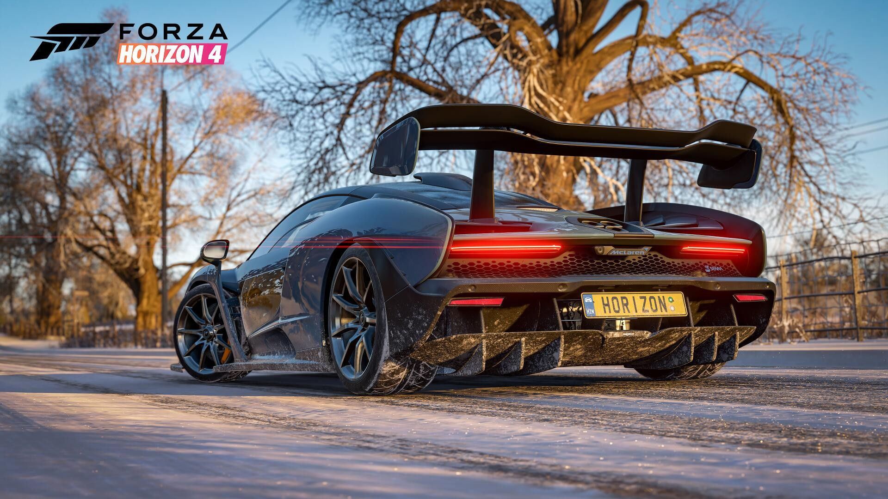

JOCURI CARE TREBUIE ÎNCERCATE
Emblematice pentru această consolă sunt, desigur jocurile exclusive, reprezentând cea mai mare parte a vânzărilor acesteia.



"Consola destinată consumului multimedia"
Xbox One este o linie de console de jocuri video dezvoltate de Microsoft. Anunțat în mai 2013, este succesorul Xbox 360 și a treia consola din familia Xbox. A fost lansată pentru prima dată în America de Nord, în Europa, Australia și Brazilia în noiembrie 2013 și în Japonia, China și alte țări europene în septembrie 2014. Este prima consolă de jocuri Xbox care va fi lansată în China, Shanghai Free-Trade Zone. Microsoft a comercializat dispozitivul ca un sistem de divertisment multifuncțional. Linia Xbox One concurează în principal împotriva consolelor, cum ar fi Sony PlayStation 4 și Nintendo Wii U, ca parte a celei de-a opta generații de console de jocuri video. Depășind arhitectura bazată pe PowerPC a predecesorului său, Xbox One marchează o revenire la arhitectura x86 utilizată în originalul Xbox; Dispune de o unitate de procesare accelerată AMD (APU) construită în jurul setului de instrucțiuni x 86-64. Controlerul Xbox One a fost reproiectat și îmbunătățit considerabil față de controlerul de la Xbox 360. Consola plasează un accent sporit pe cloud computing, precum și caracteristici de rețele sociale și abilitatea de a înregistra și partaja clipuri video sau capturi de ecran din gameplay sau live-stream direct la servicii de streaming, cum ar fi Mixer și Twitch. De asemenea, jocurile pot fi redate off-consolă prin intermediul unei rețele locale pe dispozitive Windows 10 acceptate. Consola poate reda discul Blu-ray și poate suprapune programele de televiziune live de la un set-top box existent sau un tuner digital pentru televiziunea digitală terestră cu un ghid de programe îmbunătățit. Consola a inclus opțional un senzor Kinect reproiectat, comercializat ca "Kinect 2.0", care oferă o îmbunătățire a urmăririi mișcării și a recunoașterii vocale pentru utilizarea în interfața grafică (GUI) și jocurile.
Ce o recomandă?
Emblematice pentru această consolă sunt, desigur jocurile exclusive, reprezentând cea mai mare parte a vânzărilor acesteia.